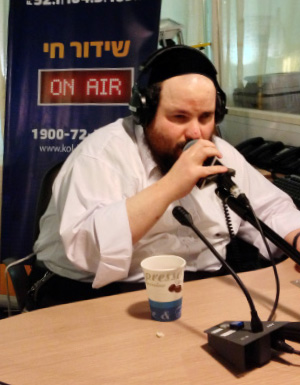

Niggunim – To Hear Is to Be Uplifted
Yossi Gil, one of the more prominent radio broadcasters in the Israeli religious sector, is blind. But this does not stop him from presenting a daily program of Chassidic niggunim. * His great love is for Chabad

He called me a day later. “I am starting the ‘B’Shirei Zimra’ program now, but I can talk to you in between.” I agreed, of course. He politely excused himself and turned to the microphone in the studio of the Kol B’Rama radio station in Yerushalayim. Over the phone I could hear his expertise in the material as he said words and names as though he was reading them. He gave compliments to the composer, the arranger, and the conductor, praised the Chassidic song he was about to play, mentioning names, the year the album was produced, etc. When he mentioned names and descriptions, it sounded like he was well acquainted with all the personalities; one who doesn’t know his personal story would find it incredible that the dozens of names of people who arranged, composed and conducted, as well as the names of the CD’s with the songs that were played that hour, were drawn out of the depths of his memory. When he hears a melody, song or voice, it is forever etched in his memory.
His last name is actually Krishevsky; “Gil” is the name he uses for the radio program. He has been broadcasting for the past fifteen years, first on the pirate station “Kol Simcha” and then “Kol Chai,” and now “Kol B’Rama.”
Yossi is 38 and from a Yerushalmi family. He was born prematurely in the seventh month and placed in an incubator where, due to a mishap, he became blind. From when he was very young he listened to music which was a balm to his soul. He grew up listening to the music of Bentzion Shenker, David Werdyger and the London Pirchei.
“From a young age, from when I can remember, I listened to the Nicho’ach niggunim. Later, when I learned in the Nezer Ha’Torah yeshiva high school, I had a maggid shiur who was very connected to Lubavitch. Through him I was drawn even further into the world of Chabad. I learned Tanya and went to farbrengens. I bought the entire set of “Maaseh Rav” – stories the Rebbe told and when I was twelve, I bought all the Nicho’ach recordings.
“Music always spoke to me, especially Chassidic music. Chabad niggunim in particular have a warm place in my heart thanks to the Nicho’ach recordings. These recordings were first produced 53 years ago, which is why they don’t have that superior sound quality and effects we are used to today, but I think every parent, Chabad or not, must have his children listen to this wonderful series in order to understand how real Chassidim farbrenged; in order to bequeath Jewish values to them. The Nicho’ach niggunim do not end; they open the heart and their value is enormous. Listening to them gives a special appreciation for what the Rebbe Rayatz said about the niggunim. Today, we cannot sit together with mashpiim from a previous generation, but someone who wants to get a real sense of how they used to sing, should listen to Nicho’ach.”
A SPECIAL PROGRAM FOR 24 TEVES
Although he loves professionalism and quality, Yossi maintains that recordings of “real” niggunim are preferable, even if their quality is not the highest, over “modern” niggunim, which are likely to fade with time. He says, “I really like the recent CD produced by Mordechai Brodsky of Heichal HaNegina in Rechovos, along with R’ Mendel Amar of Ashdod. It is the second in a series, with the first one called Ben Yakir and the new one called HaNiggun Sheli. They are both special and original. If you are looking for genuine niggunim, this is it. This CD has a tremendous contribution to make to niggunim; more treasures like this need to be produced, i.e. where the authenticity of the niggun is preserved without it sounding too modern.”
Yossi seeks to speak only positively and prefers not to go on about negative subjects like what he sees as a blow to the holiness of Chassidic niggunim, which bothers him very much. He has high praise for Avrohom Fried, “who does holy work. I think he is one of the great Chabad shluchim. Aside from being a Chassidic young man who is worthy of emulation, he has made authentic Chabad niggunim accessible to very broad audiences who would not be exposed to them otherwise.”
Without a doubt, authentic Chabad tunes have been blossoming in the music world of late. Suddenly, everyone has discovered the power in Chabad niggunim. “Moshe Laufer’s new album, a continuation of previous CD’s of Chabad niggunim, is very successful; they spread the wellsprings of Chabad song.”
In Yossi’s daily program, “B’Shirei Zimra,” he plays Chassidic songs and niggunim, although they tend to be the most current productions. “I want to clarify that these are not songs empty of serious content which is a widespread phenomenon in our generation. They are all genuine Chassidic songs. But the niggunim of R’ Zalman Levin, for example, I can’t play because the program is ‘lighter,’ and there are also considerations of sound quality. Yet, on my Thursday night broadcast between midnight and 2:30, I play a lot of Nicho’ach niggunim because the program is farbrengen style.
“On Chaf-Dalet Teves I devoted a nice portion of the program to Chabad niggunim in general, especially the niggunim of the Alter Rebbe, founder of Chabad Chassidus. I also played them on my daytime show. I consider it a form of shlichus. Although I enjoy the music, when I am able to play the niggunim of the Rebbeim on special dates, it’s a shlichus; to broadcast the niggunim of the tzaddikim, of the Chabad N’siim, is a great privilege for me. I know that I reach people who would not otherwise be exposed to these niggunim. ‘Everything G-d created in His world, He created for His glory’ – if it is possible to play such special niggunim over the radio, I will certainly do so. The Rebbe wanted there to be shiurim in Tanya on the radio and it’s for the same reason. It is mekarev Jews to Torah and mitzvos and prepares the world for Geula.”
LEARNING CHASSIDUS IN BRAILLE
Krishevsky-Gil knows the important dates in the Chabad calendar by heart. Chaf-Dalet Teves is a special day for him. “I heard a lot about the Alter Rebbe in the Rebbe’s sichos I listened to. As a bachur I would listen to cassettes and today I listen to the Sicha HaYomis and Chabad stories nearly every week on Kol HaChassidus. I am fascinated by the Rebbe’s sichos and love the practical directives, what pertains to us.”
He also listens to Heichal HaNegina where each niggun is explained in Yiddish. “The person behind this project is doing holy work,” he says emotionally.
He takes an interest in the history of Chassidus mainly because of the niggunim. “Since I live with it, I am interested in knowing as much about the Admurim and their lineage as possible. I don’t think I am the biggest expert,” he says modestly, “but I learn as much as I can. Information in Braille I read on my own and I ask for other material to be read to me. My mother, my family and friends help me with this.”
Yossi is helped by the services of a special institute called Mesilla which was started by a blind man. “There are Gemaras, Tanya, works on Jewish thought and ethics etc. all in Braille. This institute changed the lives of an entire body of people in Eretz Yisroel and the world who are blind but can now read these s’farim.”
All new CD’s must pass review by his discerning ears. In addition, “Someone reads to me who the composer is etc. and one time is enough. I also sit for hours before every program, reviewing all the CD’s I plan on playing and verifying who the composers, arrangers, and conductors are, as well as when the album was produced etc. I construct a program over a lot of time, it is not done on the fly; it requires a lot of detailed preparation before I go on air.”
We asked Yossi which Chabad niggun is his favorite. “Who am I to have an opinion about such holy niggunim of the Rebbeim?” he said with some hesitation in his voice.
“But if we take, for example, the niggunim of the Alter Rebbe, we will see something interesting. All Jews, of all backgrounds, accept them and gain a chayus from them. When I play the Dalet Bavos on the radio, for example, there is no listener whose neshama does not feel that this is a holy niggun, that it is not just another tune. Not only Chabad Chassidim who know that the parts of this niggun correspond to the four worlds feel it, but everyone, from the simplest people to the wisest.
“You see that the other niggunim of the Alter Rebbe also, like Keili Ata, Kol Dodi, and Avinu Malkeinu are widely known. Keili Ata has even been recorded by people who are not religiously observant. There is no question that these niggunim do something; they shake up the soul.
“There is no such thing as a Chabad niggun that you love the most. Each one is a world onto itself, which is why I don’t have a preference. Chabad Chassidim have a massive treasure; don’t waste it.”
Despite this, he did admit that “There are some niggunim that I hear and tears roll down my face, I am so moved. When I heard Tasheiv Enosh for the first time or Kol B’Yaar of the Shpole Zeide, which is an outpouring over the exile of the Sh’china, I felt a powerful closeness to Hashem. You, who have the merit of being Chabad Chassidim, use the time to listen to the niggunim of the Alter Rebbe and all Chabad niggunim and it will uplift you.
“I don’t say that as a mashpia but as a simple Jew who sees for himself how much it helps.”
Mordechaisegal. "Niggunim – To Hear Is to Be Uplifted." Beis Moshiach, no. 919 (March 12, 2014).